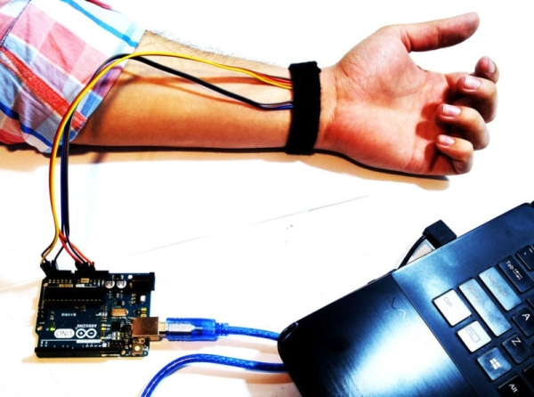

Detail Proyek
Proyek ini menggunakan Heart Pulse Sensor untuk mengukur BPM (Beats Per Minute). Perubahan BPM digunakan sebagai indikator kondisi psikologis pengguna.
- ✔ ESP32
- ✔ Heart Pulse Sensor
- ✔ Aplikasi Blynk
- ✔ Kabel Jumper

Visualisasi BPM
Status: Menunggu
Klasifikasi Detak Jantung (BPM)
- 0 BPM → Menunggu (tidak ada detak terdeteksi)
- < 90 BPM → Tenang
- 90 – 120 BPM → Tegang
- > 120 BPM → Bohong (indikasi stres tinggi)
Kode Arduino
// ======================================
// IDENTITAS TEMPLATE BLYNK
// ======================================
#define BLYNK_TEMPLATE_ID "YOUR ID"
#define BLYNK_TEMPLATE_NAME "LIE DETECTOR"
#define BLYNK_DEVICE_NAME "ESP32_Pulse"
#define BLYNK_AUTH_TOKEN "YOUR TOKEN"
// ======================================
// LIBRARY
// ======================================
#include <WiFi.h>
#include <WiFiClient.h>
#include <BlynkSimpleEsp32.h>
...
// KONFIGURASI WIFI
char ssid[] = "YOUR SSID";
char pass[] = "YOUR PASSWORD WI-FI";
// KONFIGURASI SENSOR
const int PulseSensorPin = 34;
int sensorValue = 0;
int BPM = 0;
unsigned long lastBeat = 0;
bool beatDetected = false;
int lastSensorValue = 0;
unsigned long lastSendTime = 0;
BlynkTimer timer;
// FUNGSI UNTUK MEMBACA & MENGIRIM DATA
void sendData() {
sensorValue = analogRead(PulseSensorPin);
if(sensorValue>600 && lastSensorValue<=600){
unsigned long currentTime = millis();
if(currentTime - lastBeat > 600){
BPM = 60000/(currentTime - lastBeat);
lastBeat = currentTime;
beatDetected = true;
}
}
if(millis()-lastBeat>9000){
BPM=0;
beatDetected=false;
}
lastSensorValue = sensorValue;
if(millis()-lastSendTime>=1000){
Blynk.virtualWrite(V0,sensorValue);
Blynk.virtualWrite(V1,BPM);
if(BPM==0) Blynk.virtualWrite(V2,"Menunggu...");
else if(BPM<90) Blynk.virtualWrite(V2,"Tenang");
else if(BPM<=120) Blynk.virtualWrite(V2,"Tegang");
else Blynk.virtualWrite(V2,"Bohong");
Serial.print("Raw: "); Serial.print(sensorValue);
Serial.print(" | BPM: "); Serial.println(BPM);
lastSendTime = millis();
}
}
void setup(){
Serial.begin(115200);
pinMode(PulseSensorPin,INPUT);
Blynk.begin(BLYNK_AUTH_TOKEN,ssid,pass);
timer.setInterval(50L,sendData);
}
void loop(){
Blynk.run();
timer.run();
}
Kunjungi Repositori GitHub →